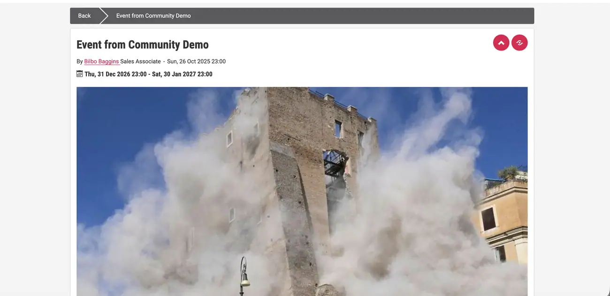
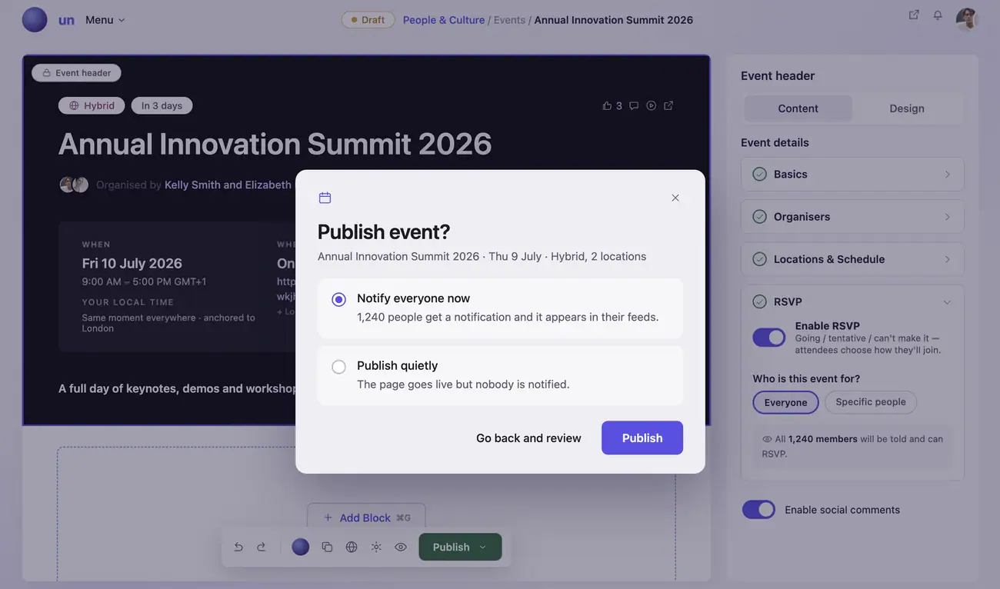
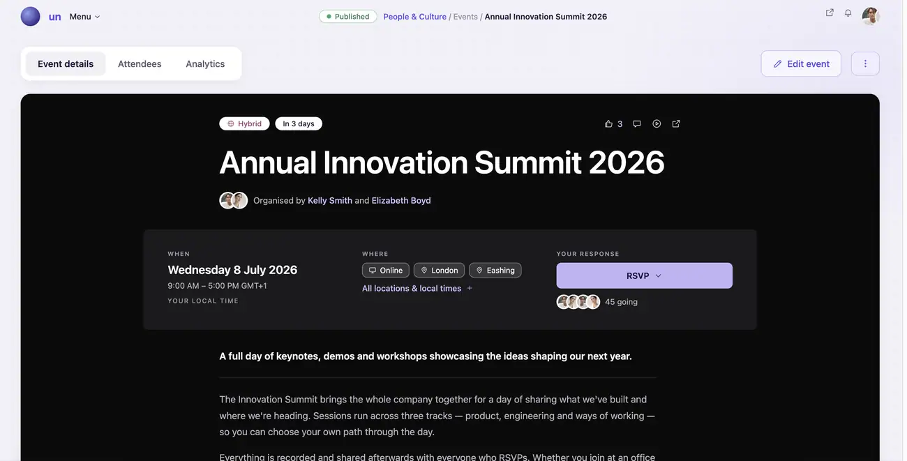
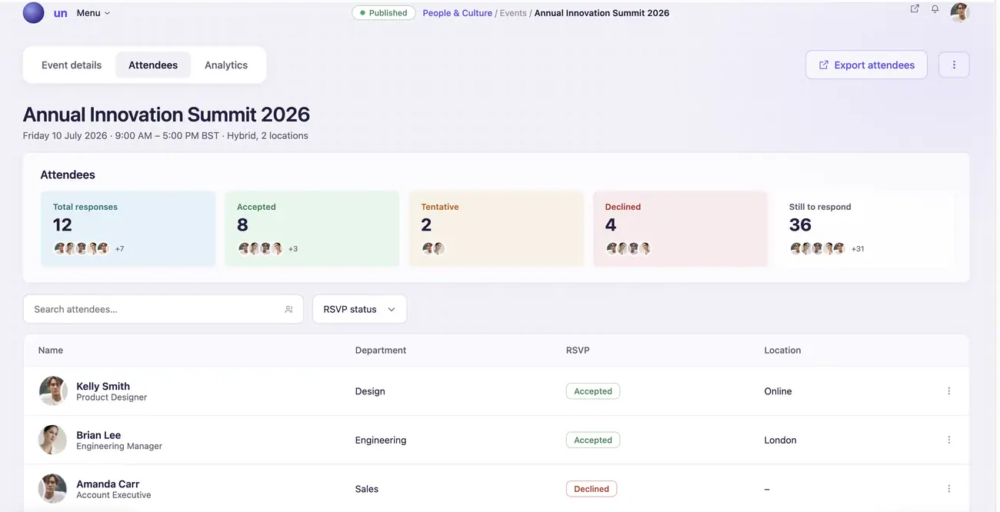
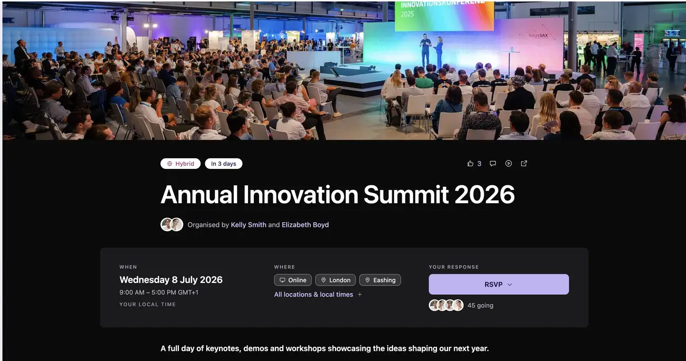
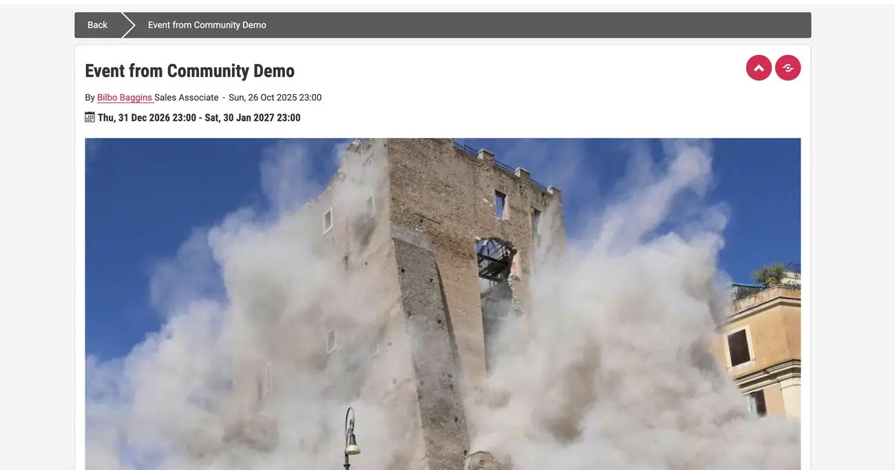

Unily · Case study · Object model and end-to-end flows
From content workaround to first-class capability
Rebuilding how the platform represents time-based moments, so employees recognise an Event on sight and organisers never touch a workaround again.
✦ Impact
use cases forced through one generic content model, rebuilt as a first-class object
median time to publish an event, in a 6-week pilot with 3 clients and 212 events
of events that still needed an external tool, with 0 architecture blockers confirmed by Engineering
Employees couldn’t reliably tell what an Event was or what it expected of them. Organisers couldn’t run one end to end without leaving the platform. Underneath both was a model designed for none of it.
A model designed for none of it
Events were being forced through a generic content model never designed to hold them. That showed up as heavy reliance on external calendar tools, repeated requests for recurring and cultural moments the platform had no category for, and mounting engineering friction every time the model was stretched.
Discovery found one model standing in for five use cases — one-off meetings, leadership broadcasts, cultural moments, training sessions and compliance deadlines. Workarounds weren’t the exception, they were the norm.

Three groups, three different failures
Everyone wanted the same thing — one clear moment with a time attached. What differed was where each group went when the platform could not give them one, and none of those places reported back.
The diagram that got it approved, not the wireframe
Rather than start from screens, I mapped the system first: what makes an Event structurally different from content, how a single Event relates to its recurring occurrences, and how timing, presentation blocks and distribution logic stay cleanly separated.
A title is the only thing required to create one; timing is required before publish. Lifecycle status — Upcoming, Live, Finished — derives automatically from that timing rather than being set by hand.
Two structural calls that shaped everything after
One Event with a repeat pattern, not duplicated records
Duplicating a record per occurrence was faster to ship and breaks the moment recurrence needs cross-occurrence consistency or editing. So a recurring Event is a single object with a shared repeat pattern.
In practice: an employee searches “Townhall”, finds the parent Event, sees the overarching details plus a component promoting the next occurrence, and can drill into a specific one for its own location, topic or speaker.
Not every event needs an article
Requiring a content page for every Event would have forced organisers straight back into a workaround for simple moments that don’t need one. So an Event publishes and appears in roll-ups with zero content authoring — or, optionally, gets a supporting article with the Event details embedded inside it.
Leaving foundations, not just a featureEvents were built on the platform’s existing block system rather than a parallel presentation layer. The RSVP and Join/Access blocks introduced here were contributed back to the shared library — which is why the Event object later powered the Events tab and “Upcoming events” widget inside Communities with no additional engineering.
Deep dive
Running an Event, end to end
From creating an Event to seeing who’s coming — the organiser’s journey once the platform actually understands what an Event is.




Use the arrow keys or buttons to step through
Four criteria, two of them deliberately awkward to hit
These were agreed with Product and Engineering before design or build started, not backfilled afterwards.
functional parity — no net loss of any existing Event use case
unaided clarity — usability participants identify an Event without explanation
validated scenarios — standard events published with zero external tools
architecture blockers — confirmed by Engineering against named future concepts
Unaided clarity is measured through usability testing rather than survey sentiment, and architectural readiness is signed off against specific roadmap concepts rather than a general sense that the model feels extensible.
Foundation over full lifecycle
Cycle 1 is in beta with 3 pilot clients. The numbers above are six weeks of early pilot data, not a launch result, and I would rather label them that way.
The clearest signal so far is qualitative: Engineering’s architecture review confirmed no schema constraints blocking recurring events, rituals or experience layering. That’s the strongest early indicator the foundation holds under the next two phases of roadmap.
The same moment, either side of the model
Before, an Event was a content page wearing a date. After, it is an object the platform understands: lifecycle, locations, responses and presentation, all derived from the model rather than assembled by hand.

Reflection and learnings
Get the model right before the features
The biggest lesson: most of the hard decisions were about what not to build yet — and walking through real scenarios is what exposed the gaps in the model.
What I got wrong
The parent Event concept for recurring series was defined late. It only surfaced when we walked through a real Townhall search, so the object model needed a late addition.
Which fields should surface when an Event is embedded in an article was still unresolved. We underestimated how much design that small-sounding question needed.
Whether participation details apply per occurrence or only at Event level is genuinely unsettled. We shipped the simpler version rather than block Cycle 1 — a call we’re validating, not one we settled.
What happens next
Confirmed attendance and richer analytics, attributed back to the Event model rather than the surfaces that host it.
Two-way external sync, so changes made in Outlook flow back as the source of truth evolves.
Resolving search discovery — whether a search surfaces the core Event, any page it’s embedded on, or individual occurrences separately.
The model had to be correct first and complete later.